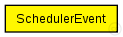
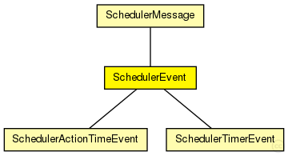

This documentation is released under the Creative Commons license
This documentation is released under the Creative Commons licenseMessage used for events of TTEScheduler with SchedulerMessageKind = NEW_CYCLE
See also: SchedulerMessageKind
Author: Till Steinbach
The following diagram shows usage relationships between types. Unresolved types are missing from the diagram. Click here to see the full picture.
The following diagram shows inheritance relationships for this type. Unresolved types are missing from the diagram. Click here to see the full picture.
| Name | Type | Description |
|---|---|---|
| SchedulerMessage | message |
abstract base message for TTEScheduler. |
| Name | Type | Description |
|---|---|---|
| SchedulerActionTimeEvent | message |
Message used for events of TTEScheduler that are triggered at a specified time in cycle (action_time). Should be created with message kind SchedulerMessageKind = ACTION_TIME_EVENT |
| SchedulerTimerEvent | message |
Message used for events of TTEScheduler that are triggered after a specified time (timer). Should be created with message kind SchedulerMessageKind = TIMER_EVENT |
// // Message used for events of TTEScheduler with SchedulerMessageKind = NEW_CYCLE // // @see SchedulerMessageKind // // @author Till Steinbach message SchedulerEvent extends SchedulerMessage { @customize(true); }
This documentation is released under the Creative Commons license